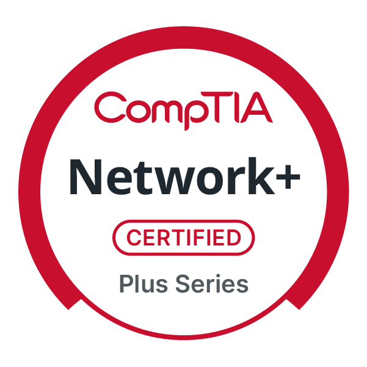

Aalok Dhonju
Student Researcher & Tech Enthusiast
Passionate about network security, edge computing, and building innovative solutions. Currently pursuing my Bachelor's in Computer Information Technology at Northern Kentucky University.
Student Researcher & Tech Enthusiast
Passionate about network security, edge computing, and building innovative solutions. Currently pursuing my Bachelor's in Computer Information Technology at Northern Kentucky University.

Bachelor of Science in Computer Information Technology
Expected Graduation: May 2026
Network and System Administration Track | Minor in Health Informatics and Information Security
Cumulative GPA: 3.938 / 4.00
Honors: US Bank Cyber Security Scholarship, COI President's List 3x, COI Dean's List, Haile COB Dean's List, Haile Enrichment Fund, International Merit Scholarship, EDGE and EDGE+ Programs
Set up and managed MySQL Server, creating automated Python scripts to streamline data extraction and storage
A comprehensive system administration tool using Python to automate various tasks
Configured a Cisco switch to enhance network security by implementing multiple security measures
Created and hosted portfolio website on a self-hosted Ubuntu server
Issuer: ISC2
Issued Oct 2025 · Expires Oct 2028
Skills: Network Security · Cybersecurity
Issuer: Cato Networks
Issued Sep 2025
Credential ID: xxd3imla0z
Issuer: CompTIA
Issued Aug 2025 · Expires Aug 2028
Skills: Troubleshooting · Networking
Issuer: Google
Issued Aug 2023
Credential ID: QU795JB8FRKD